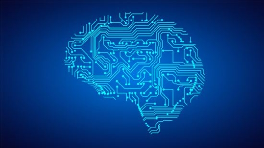

인공지능(人工知能, 영어: artificial Intelligence, AI)은 인간의 학습능력, 추론능력, 지각능력, 논증능력, 자연언어의 이해능력 등을 인공적으로 구현한 컴퓨터 프로그램 또는 이를 포함한 컴퓨터 시스템이다. 하나의 인프라 기술이기도 하다.[1][2] 인간을 포함한 동물이 갖고 있는 지능 즉, natural intelligence와는 다른 개념이다. 지능을 갖고 있는 기능을 갖춘 컴퓨터 시스템이며, 인간의 지능을 기계 등에 인공적으로 시연(구현)한 것이다. 일반적으로 범용 컴퓨터에 적용한다고 가정한다. 이 용어는 또한 그와 같은 지능을 만들 수 있는 방법론이나 실현 가능성 등을 연구하는 과학 분야를 지칭하기도 한다.
인공 지능 분야에는 몇 가지 기술이 있다. 기계 학습은 기본적인 규칙만 주어진 상태에서 입력받은 정보를 활용해 스스로 학습하는 것이다. 인공 신경망이란, 인간의 뉴런 구조를 본떠 만든 기계 학습 모델이다. 딥 러닝은 입력과 출력 사이에 있는 인공 뉴런들을 여러개 층층히 쌓고 연결한 인공신경망 기법을 주로 다루는 연구이다. 즉, 단일 층이 아닌 실제 뇌처럼 여러 계층으로 되어있다. 인지 컴퓨팅5은 기계학습을 이용하여 특정한 인지적 과제를 해결할 수 있는 프로그램 또는 솔루션을 이야기한다. 끝으로, 뉴로모픽 컴퓨팅은 인공신경망을 하드웨어적으로 구현한 것이라고 생각하면 된다.